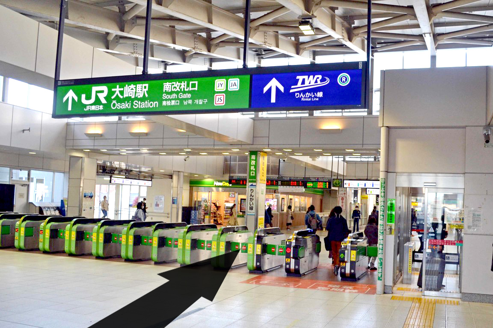
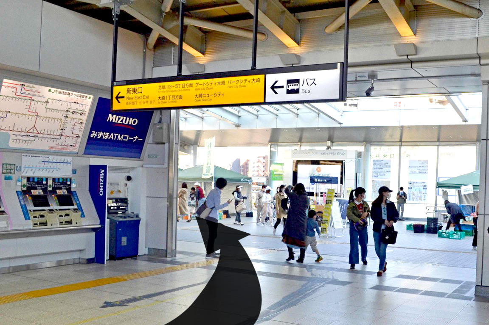
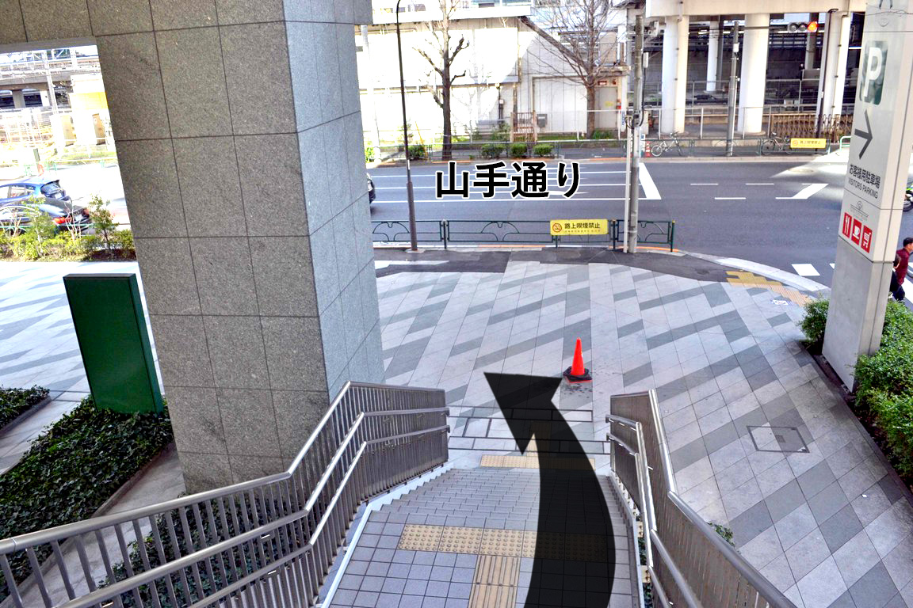
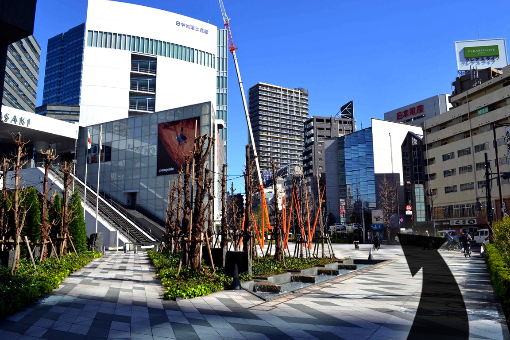
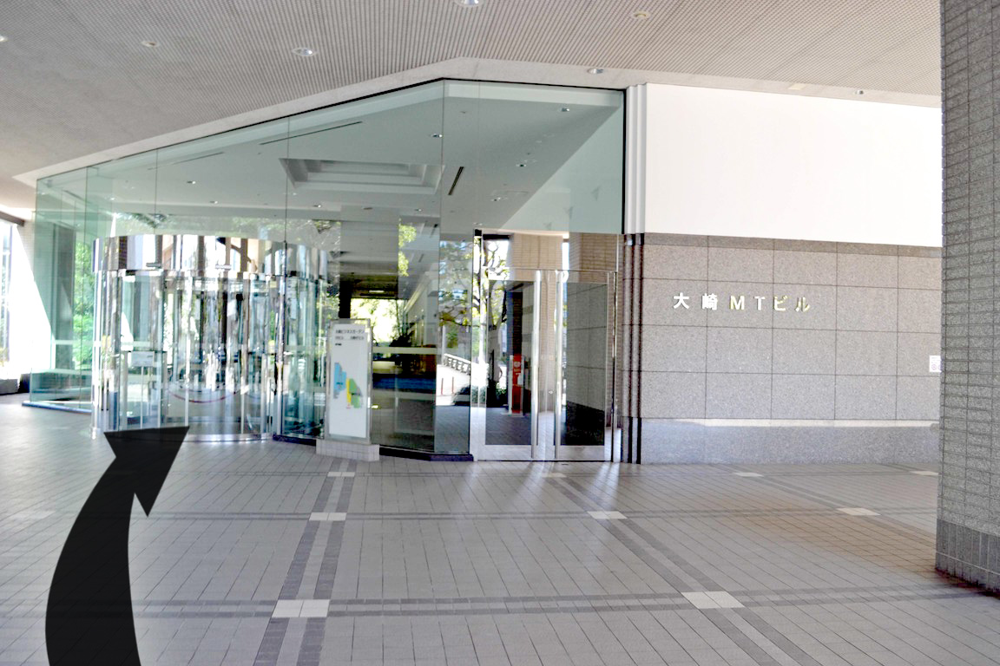
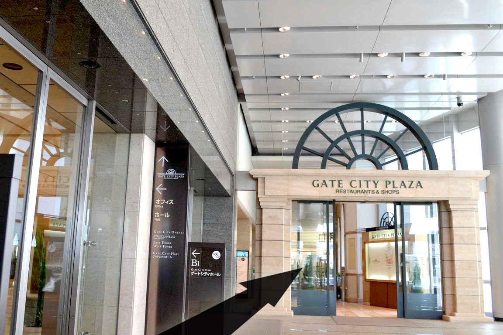
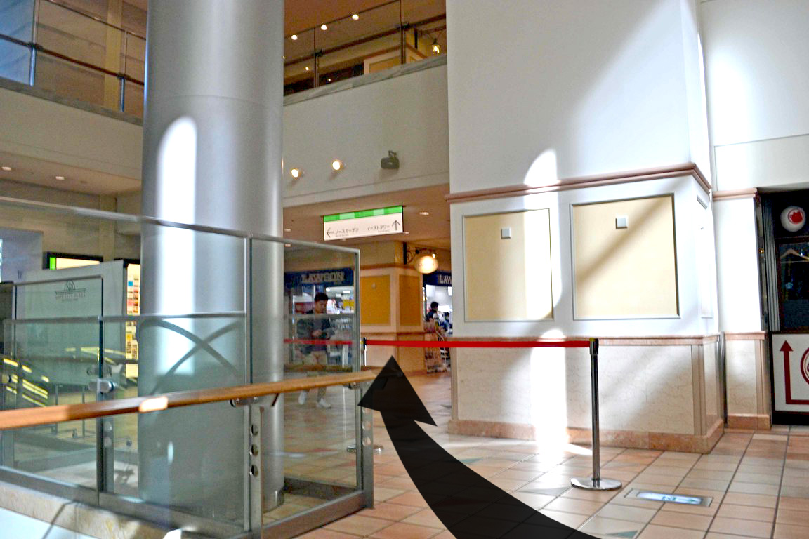
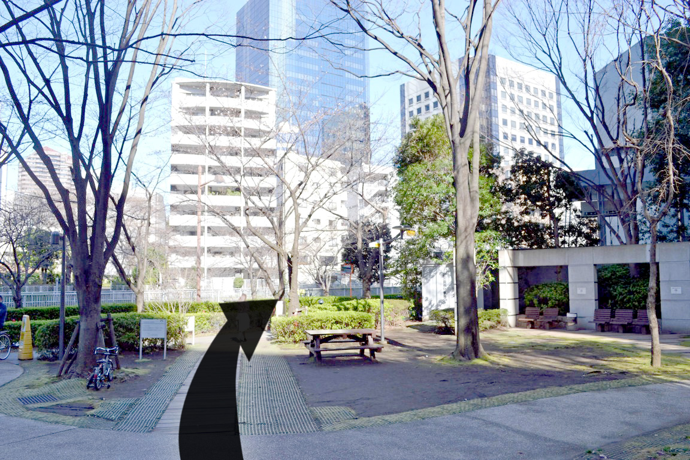

株式会社スカイウイルは.お客様の
未来を支え社会に貢献し続けます
未来を支え社会に貢献し続けます
アクセス
電車のご案内
・JR線「大崎駅」南口より徒歩8分
・京浜急行線「北品川駅」より徒歩11分
アクセスマップ
大崎駅からお越しの方
-

- ①大崎駅構内
-
大崎駅南改札口（品川駅寄り）を目指してください。
北改札口（五反田駅寄り）に出てしまわないよう、ご注意ください。
-

- ②大崎駅 南改札口
- 改札を出たら、左へ曲がり、ゲートシティ大崎方向を目指します。
-
- ③山手通りとゲートシティ大崎との分岐
-
大崎MTビルへのルートは2つあり、ここで2手に分かれます。
左手が山手通りを進むルートです。
-

- ④山手通り入口
- 大崎駅からペデストリアンデッキ（歩行者専用高架橋）の左にある階段を降りると山手通りに当たるので、左へ曲がります。
-

- ⑤山手通り
- 緩やかに左へカーブしている山手通りを道なりに真っ直ぐ進みます。
-
- ⑥居木橋
- そのまま真っ直ぐに進むと居木橋交差点です。信号と橋を渡ると大崎MTビル入口です。
-

- ⑦大崎MTビル
- 右手にミニストップがあるビルの正面の入口から入り、右手のエレベータで10階へお越しください。
A.山手通りを進むルート
山手通り１本なので、見通しがよく、迷いにくいルートです。
-
- ①大崎駅構内
-
大崎駅南改札口（品川駅寄り）を目指してください。
北改札口（五反田駅寄り）に出てしまわないよう、ご注意ください。
-
- ②大崎駅 南改札口
- 改札を出たら、左へ曲がり、ゲートシティ大崎方向を目指します。
-
- ③山手通りとゲートシティ大崎との分岐
-
大崎MTビルへのルートは2つあり、ここで2手に分かれます。
右手がゲートシティ大崎の中を通るルートです。
-

- ④ゲートシティ大崎入口
-
右前方へ向かい、ゲートシティ
大崎に入ってください。
-

- ⑤ゲートシティプラザ入口
- 左のオフィス棟入口に入らず、真っ直ぐゲートシティプラザの入口へ入ってください。
-
- ⑥エスカレーター
- 降りのエスカレーターを２つ降りてください。その先にスターバックスが見えます。
-

- ⑦ウェストタワー入口
- スターバックスを右手に通り過ぎ、突き当たると、左前方にローソンが見えます。
-
- ⑧ウェストタワー出口
- ローソンを左手に真っ直ぐ進むとゲートシティから外へ出ますが、正面に居木橋公園が見えます。
-

- ⑨居木橋公園
- その公園の真ん中を通り過ぎると目黒川の並木道に突き当たりますが、右手前方のビルが大崎MTビルです。
-
- ⑩居木橋
- 目黒川の並木道を右に曲がると居木橋交差点です。そこを左に渡り、橋も渡ると大崎MTビル入口です。
-
- ⑩大崎MTビル
- 右手にミニストップがあります。正面の入口から入り、右手のエレベータで10階へお越しください。
B.ゲートシティ大崎の中を通るルート
建物内を進むため、雨風や暑さ寒さを避けられるルートです。
会社所在地
東京都品川区北品川５丁目９−11大崎ＭＴビル10階
TEL ：03-5449-6090 FAX ：03-3447-3305